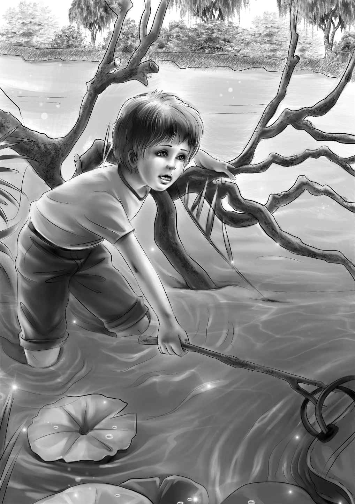

Almost Starving
伐木营地的惊心一夜过去了，天很快就亮了。太阳还没有升起来，工人们就已经起床干活儿了。大家都穿好衣服以后，大乔带着他们去见头儿。
“您有没有听说过一个叫比尔·麦格雷戈的人？”他问头儿。
“这个人失踪了。”班尼补充了一句。
“失踪了？他多大年纪？”
“七十多岁吧！”大乔说，“他已经失踪很多年了。可最近我们发现了一封信，信里说他可能来过黑熊小道。”
“可这里只是黑熊小道的一段啊！”头儿说。
“我知道。”大乔说，“所以我们才会来这儿。比尔非常强壮，我想几年前他可能在伐木营地干过活儿。”
“哦，我去问问工人们。”头儿说，“如果有消息，我会想办法告诉你们的。”
“我们还要去老村子。”大乔说，“要是有任何情况，请派人坐独木舟来找我们，我会付钱的。”
“不用客气！”头儿笑了，“我不会袖手旁观的。只要一打听到消息，我就立刻通知你们。你们要划船走完两‘望’的水路，还要走一‘扛’的路程才能到达老村子。”
“吃饭喽！”厨子摇响了早饭铃。工人们迅速聚拢过来，开始吃大盘里的速制面包。厨子专门给孩子们做了全麦煎饼，让他们就着黄油和红糖吃。
“亨利，今天我来帮你划船！”爱丽丝说。
“那就拜托了，”亨利说，“这样我们走得就更快了。”
早饭后，所有东西都被打包整理好，放到了独木舟上。孩子们没有忘记感谢厨子和热心的头儿。很快，他们又荡舟在湖面上了，天气非常晴朗。一路上，他们看到了两件有趣的事儿：划到第一“望”的时候，一只驼鹿正拼命地游向岸边；在第二“望”附近，他们看到一只漂亮的小鹿站在灌木丛中。
“我喜欢走这几‘望’，”班尼喊道，“真是不虚此行啊！大乔，咱们接下来要做什么？”
“噢，”大乔笑着回答，“等会儿下船的时候，大家得扛着独木舟步行一段路。”他朝杰西眨了眨眼睛。
“我能扛一只吗？”班尼问大乔。
“你扛不动的！”大乔说，“亨利和爱丽丝抬一只，船舱朝上，行李放里面。我一个人扛一只，将船扣在头上走，你和维莉拎几个包。这事儿没有你想得那么好玩呢！前面就是泊船的码头了，离这儿不远还有一大片湖，那是我们要经过的最后一个湖。”
亨利和大乔将独木舟拖出水面，放到岸边。爱丽丝用胳膊夹着独木舟的一头，亨利夹着另一头。大乔则顶着另一只独木舟走下小路，班尼见状，笑个不停。他和维莉拎着几包东西跟在后面。
独木舟很重，幸亏这一扛的路程不远，爱丽丝暗自庆幸道。走到下一个湖边时，大家都坐下来歇息了。
“天气真好！”杰西忍不住叫了起来。眼前是他们所见过的最大的湖，湖水是湛蓝湛蓝的，四周的树叶是墨绿墨绿的。
“我们可以多休息一会儿。”大乔说，“前面的水路还很长，没有多少地方适合登陆做饭。”
休息够了，大乔终于起身，准备出发了。这次，他们不再往湖中心划了，那样会绕很远。
“挨着岸边划，亨利，”大乔提醒道，“这样我们就不用划很长时间。”而他现在还不知道，做出这个决定有多么幸运！
两只独木舟平静地在湖面上荡漾，谁都不会想到大雨即将袭来，直到大乔抬头看了看天空。
“亨利，看！”他大喊了一声。
就在这一瞬间，风突然刮了起来，四周变得黑压压的。平静的湖面上翻起了小浪花，不一会儿，便翻滚成大浪。
大乔停下手中的桨，久久看着岸边，神情很凝重。“亨利，快靠岸！”他大喊着，“以最快的速度，停靠到那两棵大树之间！”他必须提高声音，才能盖过狂风的肆虐声。
他们调转独木舟，每个人都被风吹得东倒西歪。爱丽丝一句话也不说，专心帮亨利划着桨，他们的独木舟首先到达了岸边。这时，雨也下了起来。大雨倾盆，瞬间就把他们淋得透湿，大家一心只想快点上岸。
“加油，亨利！”大乔高声喊着，“这里足够我们两只船停靠了！快到这边来！”
亨利和爱丽丝把独木舟划到两棵大树下，停在了一个狭窄的缝隙里。
“快下来！”爱丽丝大喊，“咱们把船挪到一边，给大乔腾出地方，让他也能靠岸！”大家一起动手，连维莉也来帮忙了，然后他们朝大乔招着手。
“来了！”大乔奋力想将船直直驶入。就在这时，一个大浪将他的独木舟打歪，船上的食品和盘子全掉进了湖里。
“别管了！”他大喊，“掉了就掉了吧，班尼，坐稳了别动！”
用尽全力最后一划，大乔终于把船停靠到了亨利的船旁边。大乔发现妻子的脸都吓白了。
“谢天谢地！”爱丽丝说，“我们都没事了！”她搂住了吓得发抖的维莉。
“咱们不能在这儿干等。”亨利看了看妹妹维莉，“我们真的遇到大麻烦了，所有的食物都没了。”
“我们会饿死吗，大乔？”班尼问。
“饿死？那还不至于，顶多饿得半死吧！”
“好吧，总比饿死强一点。”班尼说。
“别淋着雨说话了，”杰西说，“至少我们有帐篷和被褥，还有半遮炉。咱们得赶紧把维莉弄干，让她暖和起来。”
“我没事。”维莉说。但她可不是没事的样子，而是在一直发抖。
亨利和大乔看了看周围，只看到了大树和灌木丛，没有路，也没有开阔的空地。
“这儿好像不太适合登陆呢！也不适合扎营。”亨利一副忧心忡忡的样子。
“到处都是树和灌木丛，”班尼说，“不过我们可以砍掉一些，这里有斧头！”
“谢天谢地，还有斧头。”亨利说，“我们赶快动手吧！”
“别在这边砍，”大乔说，“地上太湿了，不适合做宿营地。我们去找个好地方。亨利，你去那边看看，我到这边，别走丢了。”
不一会儿，他们俩就跑了回来，大乔脸上还带着笑容。
“发现水了！”他喊着，“那边有泉水，地方很不错。我们可以凑合着宿营，也只能这样了。咱们不用砍太多灌木丛，那边有搭帐篷和生火的地方。”
“你们怎么在大雨里生火呢？”班尼问。
“别忘了，我们还有半遮炉，”大乔说，“快找些大石头和干柴禾，你们很快就能看到火了。”
“可是柴火都湿了。”班尼说。
“没有，下面的没湿。”亨利告诉班尼，“来，杰西，用这把斧子砍树枝！”
杰西负责砍灌木，爱丽丝负责运送。大乔和亨利则以最快的速度支起希尔先生的半遮炉。很快，大乔就生起了火，让维莉坐在旁边，腿上盖着毯子。
“谢谢你，大乔！”维莉高兴地说，“靠着火真暖和。”她不再发抖了。
“太好了！”亨利说，“这个半遮炉真神奇，它还能挡风呢！”
“我能回去看看独木舟里还有什么吃的吗？”班尼问。
“好小子！”大乔说，“这个主意不错！你也可以当缅因州的向导了。”
“班尼，我和你一起去，”爱丽丝看了看大乔，“说不定可以找回一两袋食物呢！”
他们俩出发了！趁这个时间，大乔和亨利搭起了帐篷。大树挡住了大部分的雨水，帐篷里很干爽。
杰西把行李卷拿到帐篷里，解开带子。“不管怎样，”她说，“就算没有吃的，我们还有个干爽温暖的窝可以睡觉。”
大乔有些担心。他知道，对于孩子们来说，饿着肚子走一天一夜会非常艰难。
与此同时，出去找东西的爱丽丝和班尼却很开心。他们看到离岸边不远处的水里有一袋食物。风很大，层层波浪似乎都在把那包食物推向他们。
“要是能抓住它就好了！”班尼说，“里面是土豆和铁罐头。我们拿鱼竿试试。”
“那会把鱼竿弄折的。”爱丽丝说，“这里有根长棍子。”
“爱丽丝，让我去湖里吧，”班尼央求道，“反正我已经湿透了，而且也不需要走多远。”
“呃，好吧。”爱丽丝慢慢地说，“这里的水不太深，慢点走。”
满怀新鲜刺激感的班尼慢慢走到湖里，水没过了他的膝盖。他一只手抓着长棍子，一只手抓着树枝，够了好几次，终于用棍子勾住了食品袋的提手，小心翼翼地将袋子拉了过来。最后，他一把抓住袋子，将它拖上了岸。
“哦，班尼，你太棒了！”爱丽丝激动地说，“大乔该有多高兴啊！”
他俩抓着袋子，把它拖回了营地。
“瞧！”班尼喊道，“是土豆！”
“太好了！有土豆了！”所有人都欢呼起来。他们打开食品袋，拿出里面的东西。面粉、盐和糖都被水冲走了，但是还有土豆和好几罐牛奶。

“碟子没了，”班尼说，“它们都在另一个袋子里。”
“班尼，别操心碟子了！”维莉说，“有土豆就够幸运了，不用碟子我们也可以吃饭的。”
午饭时间早就过了，大家立即开始烤土豆。
“把土豆放到火里，就是这儿！”大乔说，“可能会烤糊，但没办法，我们总得吃点东西。我们还可以用泉水掺着牛奶喝。”
“怎么把泉水放到牛奶罐里呢？”班尼问，“罐子里不是已经装满牛奶了吗？”
亨利想到了解决办法。他跑到自己的独木舟里，拿来了水桶和刀。“现在我们有盘子了，”他说，“我们可以用这把刀打开罐装牛奶，再把牛奶和水放到桶里。”
“罐子空出来……”班尼插了一句。
“就可以当杯子了。”杰西补充道。
“嗯。”班尼说，“不管怎么样，我们不会饿死了，顶多是饿得半死。”